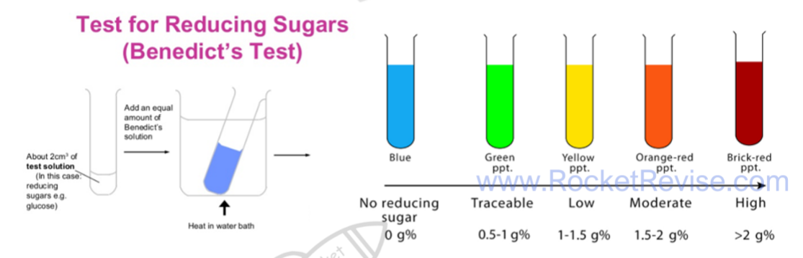
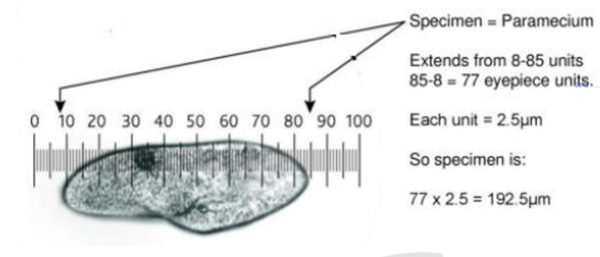
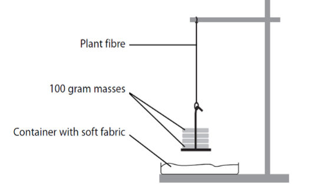
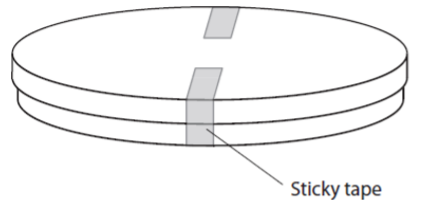

Core practicals and skills
Units 3 and 6 are written papers that test practical skills through the 18 core practicals in the specification. This page covers the skills those papers reward (variables, data quality, uncertainty, risk and ethics), how to present data and test it with statistics, and then each core practical in turn: its aim, a short method, the variables to control, how the results are processed and the mistakes that cost marks.
How the practical units are assessed
There is no laboratory exam. Unit 3 (WBI13) at AS and Unit 6 (WBI16) at A2 are written papers, each worth 20% of its half of the course and 10% of the full International A Level. The questions are set in the context of the core practicals and of unfamiliar experiments that use the same skills: planning, identifying and controlling variables, processing data, plotting graphs, evaluating methods and drawing conclusions. Remembering the small details of a method earns only a few marks. Most marks go to explaining why each step is done and applying that reasoning to a new situation.
| CP | Core practical | Topic | Paper |
|---|---|---|---|
| 1 | Semi-quantitative tests for reducing sugars (Benedict's) and starch (iodine) using colour standards | 1 | Unit 3 |
| 2 | Vitamin C content of food and drink | 1 | Unit 3 |
| 3 | Membrane permeability: effect of temperature and alcohol | 2 | Unit 3 |
| 4 | Effect of temperature, pH, enzyme concentration and substrate concentration on the initial rate of an enzyme-catalysed reaction | 2 | Unit 3 |
| 5 | Light microscope drawings of animal cells; measuring with an eyepiece graticule | 3 | Unit 3 |
| 6 | Root tip squash to observe the stages of mitosis | 3 | Unit 3 |
| 7 | Plan diagrams of roots, stems and leaves; identifying sclerenchyma, phloem and xylem | 4 | Unit 3 |
| 8 | Tensile strength of plant fibres | 4 | Unit 3 |
| 9 | Antimicrobial properties of plants, with aseptic technique | 4 | Unit 3 |
| 10 | Rate of photosynthesis in an aquatic plant: light intensity, wavelength, temperature and carbon dioxide | 5 | Unit 6 |
| 11 | Ecology of a habitat: quadrats, transects and abiotic factors | 5 | Unit 6 |
| 12 | Effect of temperature on the development of organisms | 5 | Unit 6 |
| 13 | Rate of growth of microorganisms in a liquid culture | 6 | Unit 6 |
| 14 | Effect of different antibiotics on bacteria | 6 | Unit 6 |
| 15 | Respiration in yeast using an artificial hydrogen carrier (redox indicator) | 7 | Unit 6 |
| 16 | Simple respirometer: rate of respiration and RQ | 7 | Unit 6 |
| 17 | Effect of exercise on breathing, using spirometer traces | 7 | Unit 6 |
| 18 | Production of amylase in germinating cereal grains | 8 | Unit 6 |
The skills carry forward. Techniques first met at AS, such as dilutions, colorimetry, aseptic technique and measuring a rate from a graph, are used again in the A2 practicals, so the AS sections below are worth revising for Unit 6 too.
Variables and planning
An investigation asks how one factor affects another. To answer that question fairly, only one factor may change on purpose, and everything else that could affect the result must stay the same. The vocabulary below is what mark schemes look for.
- Independent variable: the factor you change deliberately. State its range and intervals, for example 20, 30, 40, 50 and 60 °C. At least five values are needed to show the shape of a trend.
- Dependent variable: what you measure to see the effect, with its unit and the apparatus used, for example absorbance in a colorimeter or volume of gas in a gas syringe.
- Controlled variables: other factors that could change the dependent variable, kept the same in every trial. Each one needs a method, such as a thermostatically controlled water bath for temperature or a buffer solution for pH.
- Control experiment: a separate set-up that leaves out the factor being tested, such as boiled enzyme, a paper disc soaked only in the solvent, or glass beads in place of live organisms. If the control shows no change, the change in the test can be put down to the factor under test.
- Confounding variable: a factor that changes along with the independent variable and could explain the result instead. In fieldwork these often cannot be controlled, so they are measured and taken into account.
- Hypothesis: a testable prediction, such as "membrane permeability increases with temperature". A statistical test starts from the null hypothesis, which states that there is no difference, or no correlation.
Controlling variables is what makes a conclusion valid. If the temperature drifted while you changed the pH, you could not tell which factor caused the change in rate. A control experiment does a different job: it shows that the effect needs the factor at all, for example that the clearing of a milk suspension needs active enzyme and does not happen on its own.
A strong "describe how you would investigate" answer usually: names the independent variable with at least five values; says exactly how the dependent variable is measured; names two or more controlled variables and how each is kept constant; includes a control; repeats each value at least three times and calculates a mean; says how the data will be processed (graph, rate, statistical test); and gives a hazard with a precaution.
Common mistake: listing the independent or dependent variable as a controlled variable, or listing something that was not in fact kept constant. "Keep the temperature the same" earns less than "use a water bath set at 30 °C".
Quality of data
Several everyday words have exact meanings when they describe data. Use them precisely, because mark schemes reward the correct term and penalise a vague one.
- Valid: the measurement really measures what it is meant to, and the conclusion comes from a fair test in which only the independent variable changed. Validity depends on the method (including the controls) and on the instruments.
- Accurate: close to the true value. Accuracy is lowered by systematic error. It cannot be worked out directly, because the true value is usually unknown.
- Precise: repeated readings agree closely with each other. Precision is affected by random error and can be judged from the range or the standard deviation.
- Repeatable: the same person, using the same method and equipment, gets similar results when the measurement is repeated.
- Reproducible: similar results are obtained by someone else, or with a different method or apparatus. This is a stronger check than repeatability.
- Reliable: a general word for results that can be trusted because repeats agree. Reliability is improved by taking more repeats, checking how closely they agree, and repeating any anomalous readings.
- Resolution: the smallest change an instrument can show, such as 1 mm on a ruler or 0.01 g on a balance.
Errors come in two kinds. Random errors make readings scatter unpredictably either side of the true value, for example judging the exact moment a colour disappears. Repeating and taking a mean reduces their effect. Systematic errors shift every reading by the same amount or in the same direction, for example a colorimeter that was not zeroed or a balance that was not set to zero. Repeating does not remove a systematic error; correct calibration and technique do.
Precise does not mean accurate. Readings can agree closely with each other and still all be wrong by the same amount, if there is a systematic error such as an uncalibrated instrument.
Uncertainty and percentage error
Every reading has an uncertainty: the range within which the true value is likely to lie. For a scale it is normally taken as half the smallest division, so a thermometer marked in 1 °C steps has an uncertainty of ±0.5 °C. Glassware often has its own tolerance printed on it, and a digital display is limited by its last digit. Uncertainty is not a mistake. It remains even when the technique is perfect.
When one measurement needs two readings, such as both ends of a ruler or the start and end readings of a burette, the two uncertainties are added. A ruler read to ±0.5 mm at each end gives an overall uncertainty of ±1 mm.
percentage uncertainty = uncertainty ÷ measured value × 100
Questions often call this the percentage error. It shows how much the uncertainty matters compared with the size of the reading. Measuring 25 cm³ with a measuring cylinder read to ±0.5 cm³ gives a percentage uncertainty of 2%. Measuring only 5 cm³ with the same cylinder gives 10%: the uncertainty is the same, but the reading is smaller, so it matters more.
- Use apparatus with a finer resolution: a graduated pipette or burette instead of a measuring cylinder, a micrometer screw gauge instead of a ruler.
- Measure larger quantities: a longer time, a larger volume or a greater distance makes the same uncertainty a smaller percentage.
- Combine percentages: when a result is calculated by multiplying or dividing two measurements, add their percentage uncertainties. A volume of 20.0 cm³ (±2.5%) collected in 50 s (±2%) gives a rate of 0.40 cm³ s⁻¹ with an uncertainty of ±4.5%.
- Judge accuracy against a known value: where an accepted value exists, such as the figure on a nutrition label, the percentage difference is (your value − accepted value) ÷ accepted value × 100. A small percentage difference means an accurate result.
Repeats, anomalies and means
Taking at least three repeats at each value of the independent variable lets you calculate a mean, see how much the readings vary, and spot anomalies. Repeats make results more reliable. They do not make them more accurate, because a systematic error affects every repeat in the same way.
An anomaly is a result that does not fit the pattern: one repeat far from the others, or a point well away from the line on a graph. Typical causes include an air bubble in a cuvette, a slip in timing, or a beetroot piece that was squashed while being handled.
- Look for a cause: an anomaly with a known cause can be discarded with confidence.
- Repeat the reading if there is time.
- Exclude it from the mean, and state that you have done so and why. Keep it in the results table, marked, rather than deleting it.
- On a graph, plot it but ignore it when drawing the line of best fit.
Give a mean to the same number of decimal places as the raw data, or one more, not to every figure on the calculator. A calculated answer should have the same number of significant figures as the least precise measurement used to work it out.
Risk assessment and safety
A hazard is anything that could cause harm, such as a corrosive acid. The risk is how likely the harm is, and how serious, in the way the procedure is actually carried out. A precaution (control measure) reduces the risk. Many practicals share the same hazards.
| Hazard | Where it appears | Precaution |
|---|---|---|
| Warm hydrochloric acid | Root tip squash (CP6) | Eye protection and gloves; warm the acid in a water bath, never over a flame |
| Stains: toluidine blue, acetic orcein, methylene blue, iodine; DCPIP | CP1, CP2, CP5 to CP7, CP15, CP18 | Gloves and eye protection; they irritate and stain skin and eyes |
| Ethanol | CP3, CP9, flaming spreaders | Highly flammable: no naked flames nearby; keep the ethanol beaker well away from the Bunsen burner |
| Scalpels, razor blades and cork borers | CP3, CP6, CP7 | Cut on a tile, away from the body and fingers; carry blades in a tray |
| Microorganisms | CP9, CP13, CP14, CP18 | Aseptic technique; incubate at no more than 25 °C; tape lids without sealing them; never open plates after incubation; autoclave before disposal |
| Enzymes, especially as powders | CP4 | Can cause allergic reactions: avoid skin contact and do not breathe in powder |
| Hot water baths and boiling liquids | CP1, CP3, CP4 | Tongs or a test-tube holder; point tubes away from people |
| Falling masses and snapping fibres | CP8 | A tray with soft padding under the masses, feet clear, eye protection |
| Potassium hydroxide or soda lime | CP16, CP17 | Corrosive: gloves and goggles; keep organisms from touching it by resting them on gauze |
| Exercise and breathing apparatus | CP17 | Health check first; sterilised mouthpiece; fresh soda lime; stop at once if the subject feels dizzy |
| Fieldwork | CP11 | Check tides and weather, work in groups, wear suitable footwear, wash hands afterwards |
Exam tip: a full answer names the hazard, the harm and the precaution. "Wear eye protection because the warm hydrochloric acid could splash into the eyes" has all three parts. "Be careful with acid" has none of them.
Ethics of using living organisms
Safety is about protecting the experimenter. Ethics is about the organisms (and people) being studied. The specification names the ethical use of organisms in CP12 and CP13, so expect a mark for it there, but the same ideas apply to every practical that uses living things.
- Use as few organisms as possible: the smallest number that still gives reliable results.
- Choose the least sentient organism that works: plants, microorganisms or invertebrates rather than vertebrates.
- Minimise harm and stress: keep animals in suitable conditions for as short a time as possible, keep them away from harmful chemicals, and return them to their habitat afterwards.
- Protect habitats during fieldwork: replace stones and logs, avoid trampling, do not remove organisms, and get the landowner's permission.
- Human volunteers: get informed consent, allow them to withdraw at any time, screen for health problems such as asthma or heart conditions, and keep their data confidential.
- Microorganisms: use non-pathogenic strains and sterilise all cultures after use so that none are released.
Presenting data in tables and graphs
Results tables
- Layout: the independent variable goes in the first column, in ascending order. Each repeat of the dependent variable gets its own column, followed by the mean.
- Headings: each heading gives the quantity and its unit, such as "Temperature / °C". Units never go in the body of the table.
- Consistency: record raw readings to the resolution of the instrument, with the same number of decimal places down each column.
| Temperature / °C | Absorbance, repeat 1 / AU | Absorbance, repeat 2 / AU | Absorbance, repeat 3 / AU | Mean absorbance / AU |
|---|---|---|---|---|
| 20 | 0.12 | 0.10 | 0.11 | 0.11 |
| 30 | 0.15 | 0.16 | 0.14 | 0.15 |
| 40 | 0.21 | 0.19 | 0.20 | 0.20 |
| 50 | 0.33 | 0.31 | 0.62 (anomaly) | 0.32 |
| 60 | 0.85 | 0.88 | 0.86 | 0.86 |
In this beetroot example, the third reading at 50 °C is far from the other two, so it has been marked and left out of the mean (0.33 + 0.31) ÷ 2 = 0.32.
Graphs
- Axes: independent variable on the x-axis, dependent variable on the y-axis, both labelled with quantity and unit.
- Scales: linear, in easy steps (1, 2, 5 or 10 per square), using more than half of the grid in each direction. An axis does not have to start at zero.
- Points: plot each one accurately as a small cross.
- Lines: draw a line of best fit (straight or a smooth curve) when a trend is expected; otherwise join the points with straight ruled lines. Do not extend the line beyond the data unless there is a good reason.
- Type of graph: a line graph when the independent variable is continuous; a bar chart, with separate bars, when it is categoric (such as different plant extracts); a histogram, with touching bars, for frequencies in continuous classes; a scatter graph to look for a correlation between two measured variables.
- Error bars: show the range, or one standard deviation either side of each mean. When the bars of two means overlap, the difference between them may not be significant.
- Logarithmic scales: used when values cover several powers of ten, such as numbers of bacteria (CP13).
Finding a rate from a graph
A rate is the gradient: change in y ÷ change in x, with the units of y divided by the units of x (for example cm³ s⁻¹ or AU s⁻¹). For a straight line, use a large triangle to reduce the reading uncertainty. Many biological graphs curve, because the reaction slows as the substrate is used up. For these, the initial rate is the gradient of a tangent drawn to the curve at time zero.
Common mistake: using 1 ÷ time taken as "the rate". It gives only a rough average over the whole reaction, not the initial rate, and it has no proper units of amount per unit time.
Mean and standard deviation
The mean is the total divided by the number of values. The median is the middle value when they are put in order, and the mode is the most common value. The range (highest minus lowest) is a quick measure of spread, but a single anomaly changes it a lot.
The standard deviation (SD) measures how spread out the values are around the mean. The formula is given in the exam when it is needed:
s = √[ Σ(x − x̄)² ÷ (n − 1) ]
Here x is each value, x̄ is the mean and n is the number of values. A small SD means the repeats cluster closely, so they are precise and repeatable. For data that are normally distributed, about 68% of values lie within 1 SD of the mean and about 95% lie within 2 SD. When comparing two means, ranges of mean ± SD that overlap a lot suggest the difference could easily be due to chance. Ranges that do not overlap suggest a real difference, but only a statistical test can say how likely that is.
Four repeat timings agree closely: 42, 45, 44 and 43 s. Move the slider to change the fifth repeat and see what one anomaly does to the mean and the standard deviation.
Mean of all five: 43.6 s · Standard deviation: 1.1 s
With the fifth reading at 90 s, the mean moves from about 44 s to about 53 s, but the standard deviation grows nearly twenty times. That is why anomalies should be checked and, with a reason, left out before calculating.
Choosing and using a statistical test
Biological data always vary, so two means will rarely be identical and points will rarely fall on a perfect line. A statistical test decides whether a difference or a correlation is large enough that it is unlikely to be due to chance alone.
| Test | Use it when | Example | Formula and degrees of freedom |
|---|---|---|---|
| Student's t-test | Comparing the means of two sets of continuous data that are roughly normally distributed | Mean clear-zone diameter around garlic discs against mint discs (CP9) | t = (x̄₁ − x̄₂) ÷ √(s₁²/n₁ + s₂²/n₂); degrees of freedom = n₁ + n₂ − 2 |
| Chi-squared (χ²) | Comparing observed counts in categories with the counts expected from a ratio or prediction | Numbers of offspring of each phenotype against an expected 3:1 ratio | χ² = Σ(O − E)² ÷ E; degrees of freedom = number of categories − 1 |
| Spearman's rank correlation | Testing for a correlation between two variables measured on the same samples (paired data), ideally at least ten pairs | Light intensity and percentage cover of a plant in each quadrat (CP11) | rs = 1 − 6Σd² ÷ n(n² − 1); use n, the number of pairs |
Chi-squared must be done on the actual counts, never on percentages or means. The t-test needs means and standard deviations. Spearman's test uses only the ranks of the values, so it can be used on data that are not normally distributed.
- 1. Null hypothesis: write it in context, for example "there is no significant difference between the mean clear-zone diameters for garlic and mint".
- 2. Calculate the test statistic.
- 3. Find the critical value from the table for the 5% significance level (p = 0.05), using the correct degrees of freedom or number of pairs.
- 4. Compare and decide: if the calculated value (ignoring any minus sign) is equal to or greater than the critical value, reject the null hypothesis.
- 5. Conclude in terms of the biology of the investigation.
What a significant result means
The 5% level is the cut-off biologists agree on. A result is significant when the calculated value reaches the critical value: there is then less than a 5% probability that a difference (or correlation) this large would arise by chance alone. You reject the null hypothesis and report a significant difference or a significant correlation. If the calculated value is below the critical value, you accept the null hypothesis, because the difference could be due to chance.
With chi-squared, a value below the critical value is often the result that was expected. For example, χ² = 2.1 with 1 degree of freedom is below the critical value of 3.84, so the observed numbers do not differ significantly from a 3:1 ratio.
A significant result supports a hypothesis; it never proves it. A significant correlation shows that two variables change together, not that one causes the other. Another factor may be changing along with both.
Worked example. Light intensity and the percentage cover of grass were recorded in ten quadrats along a belt transect from woodland into an open field.
| Quadrat | 1 | 2 | 3 | 4 | 5 | 6 | 7 | 8 | 9 | 10 |
|---|---|---|---|---|---|---|---|---|---|---|
| Light intensity / lx | 210 | 340 | 400 | 520 | 680 | 750 | 810 | 960 | 1020 | 1190 |
| Cover of grass / % | 5 | 14 | 8 | 20 | 26 | 18 | 41 | 35 | 30 | 60 |
Null hypothesis: there is no correlation between light intensity and the percentage cover of grass.
Rank each variable separately, giving rank 1 to the smallest value. Light intensity already rises from quadrat 1 to 10, so its ranks are 1 to 10. For cover: 5% is rank 1, 8% is 2, 14% is 3, 18% is 4, 20% is 5, 26% is 6, 30% is 7, 35% is 8, 41% is 9 and 60% is 10.
If two values tie, each gets the mean of the ranks they would share, so two values in 4th and 5th place are both ranked 4.5.
For each quadrat, find the difference between the two ranks (d) and square it.
| Quadrat | 1 | 2 | 3 | 4 | 5 | 6 | 7 | 8 | 9 | 10 |
|---|---|---|---|---|---|---|---|---|---|---|
| Rank of light | 1 | 2 | 3 | 4 | 5 | 6 | 7 | 8 | 9 | 10 |
| Rank of cover | 1 | 3 | 2 | 5 | 6 | 4 | 9 | 8 | 7 | 10 |
| d | 0 | −1 | 1 | −1 | −1 | 2 | −2 | 0 | 2 | 0 |
| d² | 0 | 1 | 1 | 1 | 1 | 4 | 4 | 0 | 4 | 0 |
Σd² = 16.
rs = 1 − (6 × Σd²) ÷ n(n² − 1) = 1 − (6 × 16) ÷ (10 × 99) = 1 − 96 ÷ 990 = 1 − 0.097 = 0.903.
The critical value for 10 pairs at p = 0.05 is 0.648 (the table is given in the question). 0.903 is greater than 0.648, so the null hypothesis is rejected.
Conclusion: there is a significant positive correlation between light intensity and the percentage cover of grass. There is less than a 5% probability that a correlation this strong arose by chance.
This does not show that light causes the grass to grow better. Soil moisture or trampling may also change along the same transect, so an experiment that varies light alone would be needed to show cause.
Techniques used in several practicals
Making dilutions
To make a solution of lower concentration from a stock solution, use C₁V₁ = C₂V₂, where C₁ and V₁ are the concentration and volume of stock used and C₂ and V₂ are those of the solution being made. For 10 cm³ of 0.4% glucose from a 2% stock: V₁ = (0.4 × 10) ÷ 2 = 2 cm³ of stock, made up with 8 cm³ of distilled water.
A serial dilution repeats the same dilution step, so each solution is a fixed fraction of the one before. Adding 1 cm³ of a solution to 9 cm³ of water dilutes it tenfold, so a series gives 10⁻¹, 10⁻², 10⁻³ and so on. Serial dilutions are used to count bacteria (CP13) and to make a range of gibberellin concentrations (CP18). Mix each tube thoroughly and use a clean pipette at every step, or solution carried over will make the later tubes too concentrated.
Using a colorimeter
- Filter: choose the colour the solution absorbs most, which is the complementary colour. A red solution absorbs blue-green light; a blue solution absorbs red light.
- Zero it with a blank: a cuvette containing everything except the coloured substance, usually distilled water or the solvent. Any absorbance then measured is due to the substance being studied.
- Cuvettes: hold them by the ridged sides, keep the clear sides in the light path, wipe off fingerprints and remove air bubbles. Use the same cuvette, or matched ones, throughout.
- Absorbance and transmission: these move in opposite directions. More colour or cloudiness means higher absorbance and lower percentage transmission.
- Calibration curve: measure solutions of known concentration, plot absorbance against concentration, then read unknown concentrations from the curve.
Aseptic technique
Aseptic technique keeps unwanted microorganisms out of cultures and keeps cultures away from people. It matters even with harmless strains: a culture can become contaminated, or a strain can mutate, so all cultures are treated as possible pathogens.
- Before and after: wash hands and wipe the bench with disinfectant.
- Work near a lit Bunsen burner: the rising air carries airborne microbes away from the work.
- Sterilise equipment: heat wire loops until red hot and let them cool; dip glass spreaders in ethanol and pass them through the flame, or use sterile disposable ones; use sterile pipettes and forceps.
- Bottles and dishes: pass the neck of a culture bottle through the flame after opening and before closing; lift a Petri dish lid only slightly, and for as short a time as possible.
- Incubation: fix the lid with two short strips of tape so that air can still get in (sealing it all round would favour anaerobic bacteria, which include pathogens); label the base; incubate upside down so condensation does not drip onto the agar; use 25 °C, not 37 °C, to avoid culturing human pathogens.
- Disposal: do not open plates after incubation; autoclave all cultures and equipment before disposal.
Unit 3 core practicals: Topics 1 and 2
CP1 · Reducing sugars and starch with colour standards
A qualitative test only tells you whether a substance is present. A quantitative test gives its exact amount. A semi-quantitative test sits in between: it gives a rough estimate by comparing the sample with standards of known concentration.
- Aim: estimate the concentration of reducing sugar (with Benedict's reagent) or of starch (with iodine solution) in a sample by matching its colour against a set of colour standards.
- Method: use a glucose stock solution to make at least five known concentrations. Put the same volume of each into separate tubes, add an equal volume of Benedict's reagent and heat all the tubes together in a boiling water bath for the same time. The more reducing sugar, the more blue copper(II) ions are reduced to a red-brown copper(I) oxide precipitate, so the colours run from blue through green, yellow and orange to brick-red. Treat the unknown in exactly the same way and match it to the nearest standard. For starch, make a dilution series of starch, add the same volume of iodine solution to each, and compare the unknown against the range from orange-brown to blue-black.
- Control: volumes of sample and reagent (graduated pipette or syringe), water-bath temperature, heating time, and the same lighting and white background when judging colours.
- Processing: the result is a range, such as "between 0.4% and 0.6%", not one exact value. Making more standards with smaller steps narrows the range. To make the Benedict's test more quantitative, filter or centrifuge out the precipitate and measure the blue colour left in the solution with a colorimeter (red filter): the less blue remains, the more reducing sugar there was. Concentrations are then read from a calibration curve of the standards.
- Common errors: heating tubes for different times; judging colours in different light or by different people; using one pipette for every solution without rinsing; forgetting that non-reducing sugars such as sucrose give no colour unless they are first hydrolysed by boiling with dilute acid and then neutralised.

CP2 · Vitamin C content of food and drink
Vitamin C (ascorbic acid) is an antioxidant and a reducing agent. DCPIP is a blue dye that turns colourless when it is reduced. The more vitamin C a juice contains, the smaller the volume needed to decolourise a fixed volume of DCPIP.
- Aim: compare the vitamin C content of foods and drinks, for example fresh against stored juice, or raw against boiled vegetables.
- Method: pipette a fixed volume of DCPIP (for example 1.0 cm³ of 0.1% solution) into a test tube. From a burette or syringe, add a standard vitamin C solution of known concentration drop by drop, swirling gently after each drop, until the blue colour just disappears. Record the volume and repeat to find a mean. Then repeat with each juice in place of the standard. For a solid food, blend a known mass with a known volume of distilled water and filter it to get an extract.
- Control: volume and concentration of DCPIP (from one batch), concentration of the standard, the amount of swirling, the end point (compared against a reference tube), temperature, the mass of food and volume of water used for extraction, and the time between preparing a juice and testing it, since vitamin C is oxidised by air, light and heat.
- Processing: see the worked calculation below. The same mass of vitamin C is needed to decolourise the same volume of DCPIP, whatever its source.
- Common errors: overshooting the end point (add single drops near the end); shaking hard, which lets oxygen from the air re-oxidise the DCPIP so the blue returns; strongly coloured juices hiding the end point, and acidic juices turning DCPIP pink before it decolourises, so the colour must be judged against a reference; measuring with a measuring cylinder instead of a burette or graduated pipette.
Boiling vegetables lowers their vitamin C. The vitamin is water-soluble, so it passes out of the damaged cells into the cooking water, and heat also speeds up its breakdown.
1.0 cm³ of DCPIP was decolourised by a mean of 0.60 cm³ of a 1.0 mg cm⁻³ vitamin C standard. Mass of vitamin C needed = 0.60 × 1.0 = 0.60 mg.
The same 1.0 cm³ of DCPIP was decolourised by a mean of 1.5 cm³ of orange juice, so 1.5 cm³ of juice contains 0.60 mg of vitamin C.
Concentration in the juice = 0.60 ÷ 1.5 = 0.40 mg cm⁻³ (40 mg per 100 cm³).
Shortcut: concentration in juice = (volume of standard ÷ volume of juice) × concentration of standard = (0.60 ÷ 1.5) × 1.0.
CP3 · Membrane permeability: temperature and alcohol
Beetroot cells store a red pigment, betalain, in their vacuoles. To leak out it must cross two membranes: the tonoplast around the vacuole and the cell surface membrane. The amount of pigment in the surrounding water therefore shows how permeable those membranes have become.
- Aim: investigate the effect of temperature, and of alcohol (ethanol) concentration, on the permeability of cell membranes.
- Method: cut beetroot cylinders with a cork borer and trim them to the same length on a tile. Rinse them in distilled water until no more colour comes out, then blot them; this removes pigment from cells cut open during preparation. Put the same volume of distilled water into tubes in water baths at a range of temperatures (for example 20 to 70 °C) and let it reach temperature before adding one cylinder to each tube for a fixed time (for example 20 minutes). Remove the cylinders, shake each tube to mix, and measure the absorbance in a colorimeter with a blue-green filter, zeroed with distilled water. For alcohol, use a range of ethanol concentrations (for example 0 to 40%) at one temperature.
- Control: size and surface area of the pieces (same borer, same length), the same beetroot, rinsing time, volume of liquid, time in the liquid, temperature in the alcohol experiment, and mixing before each reading.
- Processing: plot mean absorbance against temperature or ethanol concentration. Higher absorbance means more pigment escaped, so the membranes were more permeable. If percentage transmission is measured instead, it falls as leakage increases.
- Common errors: not rinsing the pieces; squeezing them when removing them; adding beetroot before the water reached temperature; not shaking before taking a reading; explaining the results only as faster diffusion, when the key point is damage to membrane structure.
At low temperatures little pigment escapes. As the temperature rises, the phospholipids move more and the bilayer becomes more fluid, so leakage creeps up. Above roughly 50 to 60 °C the membrane proteins denature and the bilayer is disrupted, leaving gaps, so leakage rises steeply. Ethanol is a lipid solvent: it disrupts the phospholipid bilayer and denatures membrane proteins, so leakage increases with ethanol concentration.
CP4 · Initial rate of an enzyme-catalysed reaction
- Aim: investigate the effect of temperature, pH, enzyme concentration and substrate concentration on the initial rate of an enzyme-catalysed reaction.
- Method (trypsin and casein): a protease such as trypsin hydrolyses casein, the protein that makes a milk suspension cloudy, so the mixture clears. Put the enzyme and the substrate in separate tubes in a water bath for about five minutes so they reach the set temperature, with a buffer to fix the pH. Mix them, start timing, and read the absorbance in a colorimeter at once and then every 15 seconds for a few minutes. Repeat three times at each of at least five values of the independent variable. Other systems work the same way, such as catalase (from potato) with hydrogen peroxide, collecting the oxygen in a gas syringe or an inverted measuring cylinder.
- Control: the three factors not being tested, the volumes of enzyme and substrate, the same enzyme stock, buffer pH, water-bath temperature and the reading interval. When enzyme concentration is the variable, the substrate must be in excess so it never limits the rate. A trial run helps to choose concentrations that give a reaction neither too fast nor too slow to measure.
- Control experiment: boiled enzyme, or distilled water instead of enzyme, shows that the change needs active enzyme.
- Processing: plot absorbance (or product) against time for each condition and draw a tangent at time zero; its gradient is the initial rate. Then plot initial rate against the independent variable.
- Common errors: mixing before the solutions reached temperature; a delay between mixing and the first reading; using 1 ÷ time for the whole reaction as the rate; drawing the tangent somewhere other than at time zero; giving a rate without units.
The initial rate is used because it is the only point at which the conditions are exactly those that were set. As the reaction goes on, substrate is used up and product builds up, so the rate falls for reasons that have nothing to do with the factor being tested.
Unit 3 core practicals: Topics 3 and 4
CP5 · Animal cells and the eyepiece graticule
- Aim: make observations and labelled drawings of animal cells with a light microscope, and measure them using a calibrated eyepiece graticule.
- Method (observing): place animal cells on a slide (for example cheek cells collected on a cotton bud, or a prepared slide), add a drop of methylene blue to stain the nuclei, and lower a cover slip at an angle to avoid trapping air bubbles. Find and focus the cells on the low-power objective using the coarse and then the fine focus. Move to high power and use only the fine focus.
- Method (drawing): draw a few cells large, with single sharp pencil lines and no shading, in the correct proportions. Label lines are ruled and do not cross. Add a title and the magnification or a scale bar.
- Method (calibrating): the eyepiece graticule has a scale in arbitrary units, whose real size depends on the objective lens. Put a stage micrometer (a slide with a ruled scale, often 1 mm divided into 100 divisions of 10 µm) on the stage and line its scale up with the graticule. Count how many eyepiece units match a known length. One eyepiece unit = known length ÷ number of eyepiece units. Repeat the calibration for every objective lens.
- Processing: if 40 eyepiece units match 100 µm, one unit is 2.5 µm, and a cell 24 units long is 24 × 2.5 = 60 µm. Magnification = size of image ÷ actual size, with both in the same unit (1 mm = 1000 µm).
- Common errors: using a calibration from a different objective lens; mixing units; drawing many tiny cells; sketchy or shaded lines; using the coarse focus on high power, which can drive the lens into the slide.

CP6 · Root tip squash and the stages of mitosis
- Aim: prepare and stain a root tip squash, identify the stages of mitosis and calculate a mitotic index.
- Method: cut the last few millimetres from a growing root, for example garlic or onion; the dividing cells (meristem) are just behind the root cap. Place the tip in warm (about 60 °C) 1 mol dm⁻³ hydrochloric acid for a few minutes, then rinse it. The acid breaks down the pectins of the middle lamella that hold the cells together, so they can be separated, and it stops further division. Put the tip on a slide, add a stain such as acetic orcein or toluidine blue, which colours the chromosomes darkly, and break the tip up with a mounted needle. Add a cover slip and press down firmly and evenly through filter paper, without any sideways movement. This spreads the cells into a single layer, thin enough for light to pass through and with the chromosomes separated. Look on low power to find dividing cells, then on high power.
- Identifying stages: in interphase a nucleus is visible but not separate chromosomes; in prophase the chromosomes become visible as threads; in metaphase they line up across the middle of the cell; in anaphase the chromatids separate towards opposite poles, often in V shapes; in telophase two groups of chromosomes sit at the poles and new nuclear envelopes form.
- Control: the region of root used (the tip), the age of the roots, time in acid, time in stain, and a fixed rule for counting (for example, count every cell wholly inside randomly chosen fields of view).
- Processing: mitotic index = number of cells with visible chromosomes ÷ total number of cells counted (often × 100 to give a percentage). The proportion of cells in a stage shows how long that stage lasts: if 5% of cells are in metaphase and the cycle takes 20 hours, metaphase lasts about 0.05 × 20 = 1 hour.
- Common errors: taking tissue too far from the tip, where few cells divide; squashing sideways, which breaks cells and smears chromosomes; a preparation too thick, so cells overlap; counting the same cell twice.
CP7 · Plant tissues: sclerenchyma, phloem and xylem
- Aim: draw plan diagrams of transverse sections of roots, stems and leaves; draw cells of plant tissues; and identify sclerenchyma fibres, phloem sieve tubes and xylem vessels and where they are.
- Method: cut very thin transverse sections with a sharp razor blade or scalpel and float them in water in a watch glass. Mount the thinnest on a slide and stain it. Toluidine blue turns lignified walls (xylem and sclerenchyma) blue-green and unlignified walls purple; acidified phloroglucinol stains lignin red. Examine on low power first, then high power.
- Drawing: a plan diagram shows only the outlines of the tissues, in the right proportions, with no individual cells. A cell drawing shows a few cells accurately, including the thickness of their walls.
- Identifying: xylem vessels are wide, empty tubes with thick lignified walls; sclerenchyma fibres are narrow cells with very thick lignified walls and a tiny lumen; phloem sieve tubes have thin, unlignified walls with small companion cells beside them.
- Locations: in a stem the vascular bundles form a ring near the outside, with xylem towards the centre, phloem towards the outside and a cap of sclerenchyma outside the phloem. In a root the xylem forms a central star or cross with phloem between its arms. In a leaf midrib the xylem lies above the phloem.
- Common errors: sections too thick to see individual cells; drawing cells in a plan diagram; shading; mixing up the positions of xylem and phloem; not knowing which colour the stain gives each tissue.
Stains are needed because thin plant sections absorb little light and look almost transparent. A stain is taken up differently by different walls, which creates contrast between tissues. Too much stain makes everything dark and hides the differences.
CP8 · Tensile strength of plant fibres
- Aim: compare the tensile strength of fibres from different plants: the force per unit cross-sectional area needed to break them.
- Method: extract fibres (for example from celery or nettle stems). Fix one end of a fibre to a clamp stand and hang a mass holder from the other, with the same length of fibre between the two points each time. Add masses gently, one at a time, until the fibre breaks, and record the total mass hanging at that moment. Measure the diameter of the fibre with a micrometer screw gauge or a calibrated eyepiece graticule. Repeat with several fibres of each type.
- Control: length of fibre, the plant species and age, how the fibres were extracted and treated (for example soaking time), size of each added mass, temperature and humidity.
- Processing: breaking force (N) = mass (kg) × 9.8 N kg⁻¹. Cross-sectional area = πr² (or πd² ÷ 4). Tensile strength = breaking force ÷ cross-sectional area, in N m⁻² (Pa). For example, a fibre 0.40 mm across (radius 2.0 × 10⁻⁴ m) breaking at 0.60 kg: force = 5.9 N; area = π × (2.0 × 10⁻⁴)² = 1.26 × 10⁻⁷ m²; tensile strength ≈ 4.7 × 10⁷ N m⁻².
- Common errors: adding masses in large steps (the fibre may break anywhere between two values; use smaller masses near the breaking point); dropping masses on, which adds a sudden extra force; fibres breaking at a knot or the clamp; comparing breaking masses when the fibres have different diameters.

CP9 · Antimicrobial properties of plants
- Aim: compare how well extracts of different plants (for example garlic, mint or ginger) inhibit the growth of bacteria, using aseptic technique.
- Method: grind a fixed mass of each plant with a fixed volume of solvent (ethanol or water) and filter. Soak sterile paper discs of the same size in each extract for the same time; soak a control disc in solvent alone. Using aseptic technique, spread a fixed volume of a bacterial culture of a harmless strain evenly over sterile agar in a Petri dish with a sterile spreader. Place the discs on the agar with sterile forceps, well apart. Tape the lid with two short strips, invert the dish and incubate it at 25 °C for 24 to 48 hours.
- Control: mass of plant and volume of solvent, extraction method and time, size of disc and soaking time, volume and density of culture, volume of agar, incubation temperature and time.
- Processing: measure the clear zone (zone of inhibition) around each disc. Take two diameters at right angles and find the mean, then calculate area = πr². For an irregular zone, the area can be found by tracing it onto graph paper and counting squares. Subtract the area of the disc. A larger clear zone means the extract inhibits growth more. A t-test can show whether two extracts differ significantly.
- Common errors: leaving out the solvent-only control (ethanol is antimicrobial itself); opening the lid fully, which risks contamination; incubating at 37 °C; measuring only one diameter of an irregular zone; assuming a bigger zone always means a more powerful substance, when zone size also depends on how fast the substance diffuses through the agar.

Unit 6 core practicals: Topics 5 and 6
CP10 · Rate of photosynthesis in an aquatic plant
- Aim: investigate the effects of light intensity, light wavelength, temperature and carbon dioxide availability on the rate of photosynthesis of a pondweed.
- Method: place a cut piece of pondweed, cut end up, in a tube of water containing sodium hydrogencarbonate solution, which supplies carbon dioxide. Stand the tube in a water bath to hold the temperature steady and let the plant adjust to each new condition for a few minutes. Measure the oxygen-rich gas given off: counting bubbles per minute is quick but crude; collecting the gas in a photosynthometer (a capillary tube with a syringe) and measuring the length of the gas bubble gives a volume (πr² × length). Change one factor at a time: lamp distance for light intensity, coloured filters for wavelength, water-bath temperature, or sodium hydrogencarbonate concentration for carbon dioxide.
- Control: the other three factors, the same piece and species of plant, the time allowed at each condition, and a darkened room so the lamp is the only light source.
- Processing: rate = volume of gas ÷ time. Light intensity is proportional to 1 ÷ d², where d is the distance from the lamp, so plot rate against 1/d². Where the graph levels off, another factor has become limiting.
- Common errors: the lamp heating the water, so temperature changes as well (use an LED lamp or a heat shield of water); not allowing time to adjust; counting bubbles of different sizes; forgetting that coloured filters also change the light intensity; treating the gas as pure oxygen produced by photosynthesis, when the plant also uses some oxygen in respiration, so the measured rate is net, not gross.
CP11 · Ecology of a habitat
- Aim: find out how the distribution and abundance of organisms vary in a habitat, and relate them to abiotic factors.
- Random sampling: to compare two areas, mark out a grid with two tapes at right angles, generate random coordinates, and place a quadrat at each. Random placement avoids bias. Keep sampling until the running mean stops changing much, which shows the sample is large enough.
- Systematic sampling: where conditions change across the habitat (from woodland into a field, or up a shore), use a transect. A line transect records the species touching a line at intervals; a belt transect places quadrats at regular intervals along it.
- Abundance: count individuals per quadrat (density) for organisms that can be counted; estimate percentage cover for plants that cannot, for example by counting squares in a gridded quadrat that are more than half covered; or record frequency, the percentage of quadrats in which a species occurs.
- Abiotic factors: light intensity (light meter), temperature, soil moisture, soil pH, wind speed or, in water, oxygen concentration and flow rate, measured at each sampling point. Data loggers can record them continuously.
- Control: field conditions cannot be controlled, so take readings at the same time of day and in similar weather, use the same quadrat size and the same person to estimate cover, and record anything that might confound the results.
- Processing: kite diagrams show how abundance changes along a transect. Spearman's rank tests for a correlation between an abiotic factor and abundance; a t-test compares the mean abundance at two sites.
- Common errors: placing quadrats where they "look interesting"; too few quadrats; light readings taken at different times of day; estimating cover inconsistently; claiming that a correlation shows cause.
CP12 · Effect of temperature on development
- Aim: investigate how temperature affects the development of organisms, such as the hatching rate of brine shrimp or the growth rate of seedlings, taking into account their ethical use.
- Method (brine shrimp): add the same mass of brine shrimp eggs (cysts) to the same volume of salt water of fixed concentration in containers kept at a range of temperatures in incubators or water baths. At regular intervals, count the number of larvae that have hatched in a fixed sample volume.
- Method (seedlings): grow the same number of seeds of one batch in identical conditions at different temperatures and measure the height or mass of the seedlings each day.
- Control: salinity and volume of water, mass of eggs, light, aeration, the batch of eggs or seeds, and the water and growth medium for seedlings. Monitor the temperature with a thermometer or data logger, because it can drift.
- Processing: plot the number hatched (or growth) against time for each temperature, work out a rate, and plot rate against temperature. The temperature coefficient Q₁₀ = rate at (T + 10) °C ÷ rate at T °C. If 20 eggs hatch per day at 15 °C and 42 per day at 25 °C, Q₁₀ = 42 ÷ 20 = 2.1.
- Explanation: development depends on enzyme-controlled reactions. Up to the optimum, higher temperature gives molecules more kinetic energy and more successful collisions, so development speeds up. Above the optimum, enzymes denature and development slows or stops.
- Common errors: not mixing before taking a sample, since larvae gather in places; counting the same larva twice; using too few temperatures to find an optimum; not stating what happens to the organisms afterwards.
CP13 · Growth of microorganisms in a liquid culture
- Aim: follow how a population of microorganisms (such as yeast or a harmless bacterium) changes over time in a liquid culture, taking into account their safe and ethical use, and find the growth rate constant.
- Method: inoculate sterile nutrient broth aseptically with a small volume of culture and incubate it at a constant temperature. At regular intervals, take a sample aseptically and measure the population by one of these methods: turbidity in a colorimeter (zeroed with sterile broth), which is quick but counts dead cells too; a cell count with a haemocytometer, which shows the cells but also counts dead ones unless a viability stain is used; or dilution plating, in which a serial dilution is spread on agar and the colonies are counted after incubation, which counts only living cells.
- Control: temperature, volume and type of broth, starting number of cells, pH, and aeration or shaking.
- Processing: for dilution plating, choose a plate with roughly 30 to 300 colonies. If 0.1 cm³ of a 10⁻⁵ dilution gives 48 colonies, the original culture had 48 × 10⁵ ÷ 0.1 = 4.8 × 10⁷ cells per cm³. Plot the logarithm of population size against time to see the lag, exponential (log), stationary and death phases. During the exponential phase, k = (log₁₀ Nt − log₁₀ N₀) ÷ (log₁₀ 2 × t) gives the number of generations per unit time.
- Common errors: plotting raw numbers on a linear scale, so the early growth cannot be seen; forgetting the dilution factor; counting plates with overlapping colonies; using a turbidity reading as if it counted only living cells; contamination from poor technique.
CP14 · Effect of different antibiotics on bacteria
- Aim: compare how effectively different antibiotics, or different concentrations of one antibiotic, inhibit the growth of a bacterium.
- Method: as in CP9: spread a lawn of bacteria over agar aseptically, then add paper discs containing known concentrations of each antibiotic (or a ready-made multi-antibiotic disc), plus a control disc with sterile water. Tape the lid, invert and incubate at 25 °C, then measure each clear zone.
- Control: bacterial species, volume and density of culture, volume of agar, disc size, antibiotic concentration on each disc, incubation temperature and time.
- Processing: mean diameter and area of each clear zone; a larger zone means the bacterium is more sensitive to that antibiotic at that concentration. A t-test compares two antibiotics.
- Interpreting: a clear zone shows only that bacteria did not grow there. It cannot tell a bacteriostatic antibiotic (which stops growth) from a bactericidal one (which kills); transferring a sample from the clear zone into fresh broth and seeing whether bacteria grow would show the difference. Colonies growing inside a clear zone may be resistant mutants.
- Common errors: no control disc; saying the antibiotic "killed" the bacteria; ignoring that antibiotics with smaller or more soluble molecules diffuse further through the agar; incubating at 37 °C.
Unit 6 core practicals: Topics 7 and 8
CP15 · Respiration in yeast with a redox indicator
During glycolysis and the Krebs cycle, dehydrogenase enzymes remove hydrogen from respiratory substrates and pass it to NAD and FAD. An artificial hydrogen carrier (a redox indicator) added to a yeast suspension picks up some of this hydrogen and changes colour as it is reduced. Methylene blue and DCPIP turn from blue to colourless; TTC turns from colourless to red. The faster the yeast respires, the faster the colour changes.
- Aim: use a redox indicator to compare the rate of respiration of yeast, for example at different temperatures or with different glucose concentrations.
- Method: put a yeast suspension in glucose solution and the indicator in separate tubes in a water bath to reach temperature. Mix fixed volumes, start timing, and record the time taken for the colour to change, judged against a reference tube of yeast suspension without indicator. Set up a control with boiled yeast.
- Control: concentration and volume of yeast suspension (stirred before each sample, because yeast settles), glucose concentration, volume and concentration of indicator, temperature (unless it is the variable) and pH.
- Processing: because the same amount of indicator must be reduced each time, 1 ÷ time is proportional to the mean rate of reduction and can be used to compare conditions. Following the colour change in a colorimeter gives an initial rate instead.
- Common errors: shaking the tubes, which lets oxygen from the air re-oxidise methylene blue or DCPIP so the colour returns; not equilibrating the solutions; letting the yeast settle; judging the end point without a reference colour; leaving out the boiled-yeast control, which shows the colour change needs living cells.
CP16 · Respirometer: rate of respiration and RQ
- Aim: use a simple respirometer to measure the rate of oxygen uptake of small organisms (such as germinating seeds, woodlice or maggots) and to find their respiratory quotient (RQ).
- Method: place the organisms on gauze above potassium hydroxide solution (or soda lime), which absorbs carbon dioxide. Connect the tube through a capillary U-tube of coloured fluid to a control tube holding glass beads of the same volume, which cancels out changes caused by temperature and pressure. Stand both tubes in a water bath and leave them with the tap open for about ten minutes to equilibrate. Close the tap and measure how far the fluid moves in a set time. The syringe and three-way tap reset the fluid for repeats.
- Control: temperature (the most important, since gas volume changes with temperature), mass of organisms, volume of absorbent, equilibration time and the same capillary tube.
- Processing: volume of oxygen used = πr² × distance moved, where r is the radius of the capillary bore. Rate = volume ÷ time, often divided by the mass of organisms. RQ = CO₂ produced ÷ O₂ used: about 1.0 for carbohydrate, about 0.7 for lipid and about 0.9 for protein.
- Common errors: not letting the apparatus equilibrate; leaking bungs (seal with petroleum jelly); no control tube; forgetting that the reading with absorbent measures oxygen only; getting the sign wrong when working out carbon dioxide production.
With potassium hydroxide present, the fluid moved 25 mm in 10 minutes in a capillary of radius 0.50 mm. Oxygen used = πr² × distance = 3.14 × 0.50² × 25 = 19.6 mm³, a rate of 1.96 mm³ min⁻¹.
The absorbent removes all the carbon dioxide released, so the only change in gas volume is the oxygen taken in.
The experiment was repeated with water in place of the absorbent. The fluid moved 7.5 mm towards the seeds in 10 minutes, a net decrease of 3.14 × 0.50² × 7.5 = 5.9 mm³.
Now the carbon dioxide given out partly replaces the oxygen taken in, so the change equals oxygen used minus carbon dioxide produced.
Carbon dioxide produced = 19.6 − 5.9 = 13.7 mm³.
RQ = CO₂ produced ÷ O₂ used = 13.7 ÷ 19.6 = 0.70, which suggests the seeds are respiring lipid, as oil-rich seeds do.
If the fluid had moved away from the seeds without absorbent, more carbon dioxide was released than oxygen used; the two volumes are then added, and the RQ is above 1.
CP17 · Exercise and spirometer traces
A spirometer has a chamber of medical-grade oxygen floating over water. As the subject breathes in and out through a mouthpiece, the chamber falls and rises, and a pen or data logger records the volume as a trace. Soda lime absorbs the carbon dioxide breathed out, so the total volume in the chamber slowly falls as oxygen is used, and the whole trace slopes downwards. The specification asks you to interpret traces; it does not require you to use a spirometer yourself.
- Aim: use spirometer traces to find how exercise affects tidal volume, breathing rate, respiratory minute ventilation and oxygen consumption.
- Reading a trace: tidal volume is the height of one normal breath, from trough to peak (about 0.5 dm³ at rest); take the mean of several breaths. Breathing rate is the number of breaths (peaks) per minute. Vital capacity is the height of the largest possible breath. Oxygen consumption is the fall of the line joining the troughs (or peaks), per minute.
- Processing: minute ventilation = tidal volume × breathing rate. At rest, 0.5 dm³ × 12 breaths min⁻¹ = 6.0 dm³ min⁻¹. After exercise, 1.2 dm³ × 20 breaths min⁻¹ = 24 dm³ min⁻¹. Both tidal volume and rate rise, so ventilation and oxygen consumption increase.
- Control: the same subject (or subjects of similar age, sex and fitness), the same type, intensity and length of exercise, posture, and the time at which the trace is taken after exercise. A nose clip makes sure all the air passes through the mouthpiece.
- Safety and ethics: health questionnaire, informed consent, sterilised mouthpiece, fresh soda lime, short recordings only, and stop if the subject feels dizzy.
- Common errors: misreading the volume scale or the time scale (check what one square represents); measuring tidal volume from one breath only; counting half breaths; leaving out units such as dm³ min⁻¹.
CP18 · Amylase production in germinating cereal grains
When a cereal grain takes in water, the embryo releases gibberellin. Gibberellin diffuses to the aleurone layer and switches on transcription of the gene for amylase. The amylase digests starch in the endosperm to maltose, which the embryo uses for respiration and growth.
- Aim: investigate the production of amylase by germinating grains, for example the effect of gibberellin concentration, or of removing the embryo.
- Method: surface-sterilise barley or wheat grains and cut them in half; the halves without an embryo cannot make their own gibberellin. Soak them in a range of gibberellin concentrations made by serial dilution, with distilled water as the control. Place them cut side down on starch agar plates, using aseptic technique, and incubate at a constant temperature for one to two days. Flood each plate with iodine solution: the agar turns blue-black where starch remains, and a clear zone appears where amylase has diffused out and digested the starch.
- Control: type and batch of grain, number and size of grain halves per plate, soaking time, volume of agar and its starch concentration, incubation temperature and time.
- Processing: measure each clear zone and calculate its area; a larger zone means more amylase was produced. Plot mean area against gibberellin concentration, or use a t-test to compare treated grains with the control.
- Common errors: contamination by microorganisms, which make their own amylase and give false clear zones; leaving the embryo in when the aim is to test added gibberellin; placing grains so close that the zones merge; comparing diameters when areas are more sensitive to differences.
Quick checks
A student investigates the effect of temperature on pigment leakage from beetroot. Which of these is a controlled variable?
Surface area affects how much pigment can escape, so it must be kept the same in every tube. Temperature is the independent variable, the commonest wrong choice, and absorbance (which measures pigment concentration) is the dependent variable.
Repeat readings of 4.1, 4.2, 4.1 and 4.2 cm³ are obtained when the true value is 5.0 cm³. How would you describe these readings?
The readings agree closely with each other, so they are precise, but all are well below the true value, so they are not accurate. This pattern points to a systematic error. "Accurate but not precise" mixes the two terms up.
A volume of 20 cm³ is measured with a measuring cylinder that has an uncertainty of ±0.5 cm³. What is the percentage uncertainty?
Percentage uncertainty = 0.5 ÷ 20 × 100 = 2.5%. An answer of 0.5% just repeats the uncertainty without dividing it by the measurement.
Fifteen discs soaked in garlic extract and fifteen soaked in mint extract were tested on agar plates. Which statistical test should be used to compare the mean diameters of their clear zones?
Two means of continuous data are being compared, which is what the t-test is for. Chi-squared needs counts in categories, and Spearman's rank looks for a correlation between two paired variables, not a difference between two groups.
A Spearman's rank test on 10 pairs gives rs = 0.45. The critical value at p = 0.05 is 0.648. What should be concluded?
0.45 is below the critical value, so the null hypothesis of no correlation is accepted. A positive value alone does not make a correlation significant, and even a significant correlation would not show cause.
40 eyepiece units match 100 µm on a stage micrometer. A cell measures 18 eyepiece units with the same objective. What is its actual length?
One eyepiece unit = 100 ÷ 40 = 2.5 µm, so the cell is 18 × 2.5 = 45 µm. 7.2 µm comes from dividing the wrong way (18 × 40 ÷ 100).
Why is a root tip placed in warm hydrochloric acid when making a root tip squash?
The acid hydrolyses the pectins that hold neighbouring cells together, so the tissue can be spread into a single layer. Staining is done separately with a stain such as acetic orcein, which is the commonest confusion.
In a respirometer containing potassium hydroxide, why does the coloured fluid move towards the tube of germinating seeds?
Oxygen is removed by respiration and its replacement, carbon dioxide, is absorbed, so the pressure in the seed tube drops and the fluid is drawn towards it. Heat from the seeds would push the fluid the other way, and the control tube is there to cancel such effects.